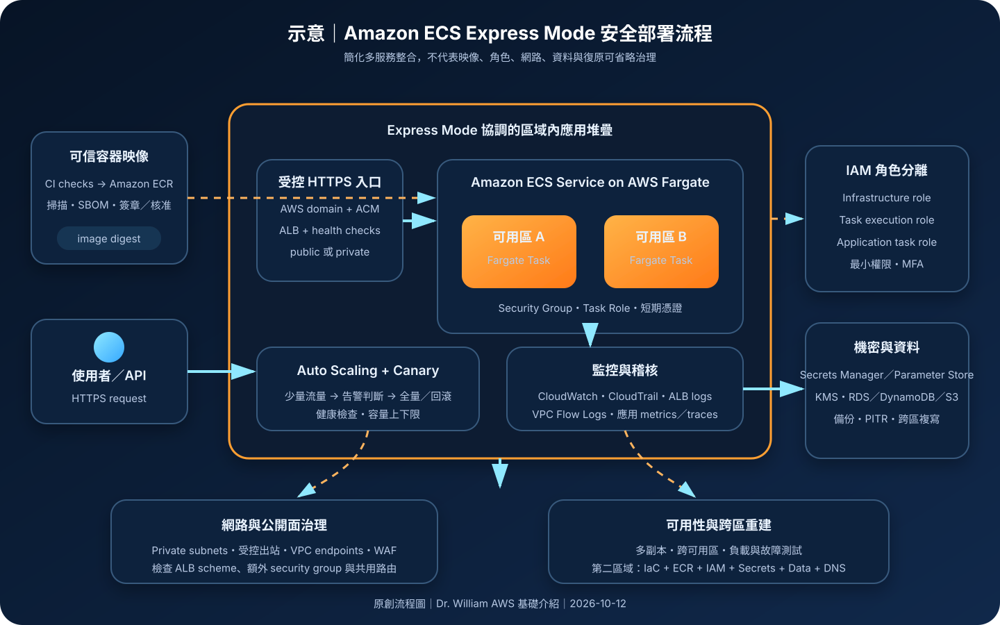

Amazon ECS Express Mode：簡化容器部署、受管入口與安全治理
Amazon ECS Express Mode 以較少參數協調 Amazon ECS、AWS Fargate、Application Load Balancer、TLS、自動擴縮、CloudWatch 與 Canary 部署。它降低初始整合複雜度，但不代替容器映像、IAM、網路、機密、資料、日誌與復原治理。
作者：Dr. William｜查閱與發布：2026-10-12
服務定位
Amazon ECS Express Mode 是 Amazon Elastic Container Service 的簡化部署模式，適合把無狀態容器化 Web 應用程式或 API 快速部署到 AWS。建立服務時至少提供容器映像、task execution role 與 infrastructure role；Express Mode 再協調 Fargate 型 ECS service、HTTPS 負載平衡、網路、安全群組、自動擴縮、CloudWatch 日誌與監控，以及具告警回滾的 Canary 部署。
Express Mode 不是另一套獨立容器平台。底層 ECS、Fargate、Application Load Balancer、ACM、CloudWatch 與網路資源均建立在客戶帳號內，仍可檢視與管理。這種透明度保留擴充彈性，也表示直接修改受 Express Mode 管理的資源可能造成設定漂移，甚至影響後續協調更新。
核心概念與服務邊界
Express Mode 自動協調
- ECS service on Fargate：以受管 Fargate 容量執行 tasks，並依設定維持副本與可用區分散。
- HTTPS 應用入口：建立或共用 Application Load Balancer、HTTPS listener、target groups、ACM certificate 與 AWS 提供的服務網域。
- 自動擴縮：建立 Application Auto Scaling target 與 target tracking policy；上下限與目標指標仍須依負載驗證。
- 部署保護：更新預設使用 Canary 流量移轉與 CloudWatch 告警回滾，降低一次全面切換的風險。
- 觀測性：建立服務專用 CloudWatch log group 與部署告警；應用指標、追蹤與日誌內容仍由團隊補足。
- 資源共用：同一 VPC 且網路條件相容時，可讓最多 25 個 Express Mode services 共用一個 ALB，以分攤固定成本。
客戶仍需明確決策
- 容器映像：來源、弱點修補、SBOM、簽章、非 root 執行、映像 digest 與供應鏈核准。
- 三類角色：部署人員、infrastructure role、task execution role 與應用 task role 必須分離並採最小權限。
- 公開或私有：選擇 public／private subnets、Internet-facing／internal ALB、security groups、DNS 與出站路徑。
- 機密與資料：使用 Secrets Manager／Parameter Store 與 KMS；持久狀態應放入受管資料服務並另行備份。
- 監控保留：設定 log retention、ALB access logs、應用告警、CloudTrail、VPC Flow Logs 與資料保護。
- 高階需求：需要 sidecar、FireLens、Linux runtime 設定或標準化控制時，可評估自訂 task definition。
適合與不適合的使用情境
適合
- 已容器化的無狀態網站、HTTP API、內部 Web 工具與可水平擴充的應用。
- 需要快速建立 HTTPS、負載平衡、Fargate、自動擴縮與安全更新流程，但不希望一開始整合大量服務參數的團隊。
- 平台團隊需要提供標準化自助部署入口，同時保留對底層 ECS 與 AWS 資源的可視性。
- 從簡化型容器服務遷移到 ECS 生態，並希望未來逐步使用自訂 task definition、CloudFormation、CDK 或 Terraform。
- 多個中小型服務位於相容網路環境，可透過共用 ALB 分攤固定費用。
不適合或不能單獨完成
- 非 HTTP／HTTPS 的長連線、特殊網路協定、批次任務或事件 worker，若無 Web 入口需求，標準 ECS、AWS Batch 或其他服務通常更直接。
- 需要精細控制負載平衡器、部署控制器、服務網路、容量提供者或特殊平台能力，且 Express Mode 管理邊界無法滿足需求。
- 需要直接管理主機、特殊核心功能、特權容器、GPU 或 Fargate 不支援的執行條件。
- 將應用狀態、唯一檔案或 session 保存在單一 task 本機，卻沒有外部持久化與復原設計。
- 把自動建立的 HTTPS、security group、CloudWatch 或 Canary 部署誤當成完整應用安全、資料保護與災難復原方案。
示意故事案例：預約查詢 API 的簡化上線
以下為示意案例，不代表特定企業或正式部署。 一個預約平台把查詢 API 打包成容器。CI 流程使用固定基底映像，完成套件掃描、SBOM 與測試後，將核准映像推送到私有 Amazon ECR，部署時以不可變 tag 或 digest 指向版本。
平台透過 Express Mode 在兩個可用區的私有 subnets 建立 Fargate tasks，建立 Internet-facing ALB 作為唯一公開入口，並由 ALB security group 僅把應用連接埠流量送到 service security group。應用 task role 只允許讀取指定 DynamoDB 資料表與 Secrets Manager secret；task execution role 僅負責拉取映像與傳送日誌；infrastructure role 只允許 ECS 協調必要的負載平衡與擴縮資源。
新版本先透過 Canary 部署接收少量流量，再依健康檢查與 CloudWatch 告警決定繼續或回滾。ALB access logs、應用 logs、metrics、traces、CloudTrail 與 VPC Flow Logs 分別送往受控目的地。跨區復原則以 IaC、ECR 映像複寫、KMS、Secrets、資料層複寫與 DNS 切換重建，不把 Express Mode 當成自動跨區容錯。

建置與運作流程
- 界定工作負載：確認為 HTTP／HTTPS 應用，記錄流量、啟動時間、CPU／記憶體、資料分類、RTO、RPO、區域與合規需求。
- 建立映像基線：採精簡且受支援的基底映像，以非 root 執行，移除不必要工具，完成 SBOM、弱點掃描、簽章與部署核准。
- 建立 ECR 治理：限制 push／pull、啟用適當掃描與保留政策，使用不可變版本或 digest，規劃跨區映像複寫。
- 分離 IAM 角色：建立最小權限的 infrastructure role、task execution role 與應用 task role；人工管理者使用聯合登入、MFA 與短期憑證。
- 選擇網路入口：依公開或內部應用選擇 public／private subnets 與 Internet-facing／internal ALB，不依賴預設 VPC 作為正式環境設計。
- 限制網路路徑：Service security group 僅接受 ALB security group；出站透過 VPC endpoints、受控 NAT、DNS 與必要目的地。
- 建立服務：提供映像、角色、container port、health check、CPU、記憶體、subnets、security groups、擴縮上下限與標籤。
- 保護機密：將敏感設定存於 Secrets Manager 或 Parameter Store，使用 KMS 加密並限制 task role；不得放入映像、環境檔、程式碼或 CI 日誌。
- 設定可觀測性：指定 CloudWatch Logs 保留期，建立應用 metrics、traces、SLO 與告警，依風險啟用 ALB access logs、VPC Flow Logs 與集中式 CloudTrail。
- 驗證 Canary：確認 health check 能反映實際服務狀態，調整 bake time、流量比例與告警，不只依 4xx／5xx 判定業務正確性。
- 執行負載與故障測試：驗證擴縮上下限、啟動延遲、可用區失效、下游限流、機密輪替、錯誤版本回滾與依賴服務中斷。
- 管理漂移：以 IaC 與變更核准維護資源；若直接修改 ALB、security groups、task definition 或 scaling policy，須確認是否仍與 Express Mode 協調相容。
- 演練復原：測試從映像、設定、Secrets、KMS、資料備份與 DNS 在第二區域重建，依結果校正 RTO／RPO。
成本、可用性與維運考量
Express Mode 本身不另收服務費，實際費用來自 Fargate vCPU／記憶體與執行時間、Application Load Balancer、LCU、CloudWatch logs／metrics、資料傳輸、NAT Gateway、VPC endpoints、ECR、ACM 以外的 DNS／憑證需求、KMS、WAF、備份及資料服務。ALB 可在相容條件下由最多 25 個 Express Mode services 共用，能降低每個小型服務的固定入口成本，但共用也需要評估配額、變更與故障影響範圍。
自動擴縮不等於無限容量。最小 task 數影響基本成本與可用性，最大 task 數、Fargate／ENI／ALB 配額、映像拉取速度、應用啟動時間與下游容量都會限制擴縮效果。Canary 部署期間會同時執行新舊環境，短期增加 Fargate 與負載平衡相關用量。
正式服務應跨多個可用區配置 subnets，使用多副本、健康檢查、逾時、退避、熔斷與下游容量保護。Express Mode 提供區域內高可用基礎元件，不會自動完成跨區資料複寫或 DNS 切換；跨區復原仍須設計、建置與演練。
Amazon ECS Express Mode 特有資安風險與控制
- 自動建立造成錯誤安全感：建立前先審核預設資源與公開面，建立後逐項檢查 ALB scheme、subnets、security groups、TLS、擴縮、日誌與告警。
- 預設公開入口：若在 default VPC 與 public subnets 建立，可能產生 Internet-facing ALB；敏感內部服務應明確選擇 private subnets 與 internal 入口。
- 角色權限過大：infrastructure role、task execution role、task role 與部署者不可共用廣泛權限；加入資源、條件、區域與標籤限制。
- 額外 security group 形成旁路：提供自訂 security group 時會增加服務可接受的入口路徑；每條規則都要驗證來源、port 與業務必要性。
- 預設出站過寬：Express Mode 建立的 service security group 可允許 Internet 出站；依資料風險限制 egress，優先使用 VPC endpoints 與受控 NAT。
- ALB access logs 未啟用：依調查、稽核與個資要求啟用受保護的 access logs，設定 S3 bucket policy、KMS、保留與刪除規則。
- 日誌永久保留：自動建立的 CloudWatch log group 預設不過期，刪除 Express Mode service 後仍可能保留；設定 retention、KMS、資料遮罩與刪除責任。
- HTTP desync 防護設定：Express Mode 建立的 ALB 預設 desync mitigation mode 需依官方文件與應用相容性重新評估，避免在未驗證下維持較弱設定。
- 映像標籤漂移：使用不可變 tag 或 digest，限制 ECR push，保留來源 commit、掃描、SBOM、簽章與核准證據。
- 機密誤放環境明文：以 Secrets Manager／Parameter Store 參照及 KMS 保護，限制讀取 principal，輪替後部署新 revision 並撤銷舊連線。
- Canary 告警涵蓋不足：4xx／5xx 之外加入延遲、依賴錯誤、業務成功率與安全事件指標；低流量服務須確保 Canary 樣本足以判斷。
- 直接修改受管資源：限制非 Express Mode API 的變更權限，透過 IaC、AWS Config 與變更稽核偵測漂移，修改前確認後續更新相容性。
- 共用 ALB 擴大影響範圍：檢查 listener rule、host routing、憑證、WAF、配額與刪除行為，避免一個服務變更影響其他應用。
- 控制面與執行期證據不足：CloudTrail 記錄 Express Mode、ECS、ELB、IAM 與相關 API；CloudWatch、ALB logs、VPC Flow Logs、應用稽核及適用的 GuardDuty Runtime Monitoring補足執行期訊號。
共同責任邊界
AWS 負責 ECS、Fargate、Elastic Load Balancing、ACM、CloudWatch 等受管服務的底層基礎設施與服務可用性，Express Mode 負責依 API 參數協調建立與更新相關資源。客戶負責帳號治理、容器映像、應用程式、IAM 角色、網路選擇、公開存取、資料分類、加密、機密、日誌內容、成本、備份、復原與法規符合性。
客戶須落實 IAM 最小權限、管理人員 MFA 與短期憑證、私有網路與受控出站、公開入口審查、KMS 加密、Secrets Manager／Parameter Store、CloudTrail／CloudWatch、映像供應鏈、資料備份及跨區重建。Express Mode 簡化配置，不會判斷應用漏洞、資料能否公開、角色是否過權、告警是否有效，或復原程序是否達成業務目標。
上線前可執行檢查清單
- □ 已確認工作負載適合 HTTP／HTTPS Express Mode，而非標準 ECS、Batch、Lambda 或其他運算模式。
- □ 已記錄服務擁有者、資料分類、區域、流量、RTO、RPO、可用性與相依服務。
- □ 管理人員使用聯合登入、MFA 與短期憑證；root 不用於日常操作。
- □ Infrastructure role、task execution role、task role 與部署者已分離並採最小權限。
- □ 映像來自受控 ECR，使用不可變版本或 digest，已完成掃描、SBOM、簽章與核准。
- □ 容器使用非 root、精簡基底映像與唯讀檔案系統等適用的強化設定。
- □ 已明確選擇 VPC、subnets、ALB scheme 與公開／私有服務邊界，不直接沿用未審核的 default VPC。
- □ Service security group 只接受 ALB security group；沒有額外寬鬆 security group 形成旁路。
- □ 出站目的地已限制；ECR、S3、Logs、Secrets Manager、KMS 等使用 VPC endpoints 或受控 NAT。
- □ TLS、憑證、DNS、WAF、rate limit、認證與授權依風險配置。
- □ 機密存於 Secrets Manager／Parameter Store 並使用 KMS，未出現在映像、程式碼、環境檔或日誌。
- □ Secret 輪替會觸發新 revision，舊 tasks、舊連線與舊權限可確實撤銷。
- □ CPU、記憶體、最小／最大 task 數、健康檢查、啟動時間與下游容量已經負載測試。
- □ Canary 流量、bake time 與回滾告警涵蓋技術及業務指標，低流量情境已另行驗證。
- □ CloudWatch log retention、KMS、資料遮罩、metrics、traces、dashboard 與 alarms 已設定。
- □ ALB access logs、VPC Flow Logs、CloudTrail 與應用稽核依風險集中保存並限制存取。
- □ 已評估 ALB 共用的路由隔離、配額、憑證、WAF、成本與共同故障影響。
- □ 直接修改底層 ECS／ALB／security group 前有變更核准、漂移偵測與回復方式。
- □ 持久資料已外部化並完成備份、PITR、跨區複寫與實際還原測試。
- □ 第二區域具備 IaC、映像、IAM、KMS、Secrets、網路、資料與 DNS 切換程序，已演練 RTO／RPO。
- □ 已設定 Budget、成本異常監控、日誌保留、NAT／endpoint、ALB LCU 與資料傳輸檢查。
AWS 官方一手來源
- Amazon ECS Express Mode overview（查閱：2026-10-12）
- Creating an Amazon ECS Express Mode service（查閱：2026-10-12）
- Resources created by Amazon ECS Express Mode services（查閱：2026-10-12）
- Create your first Express Mode service using the AWS CLI（查閱：2026-10-12）
- Updating an Amazon ECS Express Mode service（查閱：2026-10-12）
- Best practices for Amazon ECS Express Mode services（查閱：2026-10-12）
- Updating resources outside of Express Mode（查閱：2026-10-12）
- AWS::ECS::ExpressGatewayService（查閱：2026-10-12）
- Pass sensitive data to an Amazon ECS container（查閱：2026-10-12）
- Amazon ECS Express Mode supports custom task definitions（查閱：2026-10-12）
- Announcing Amazon ECS Express Mode（查閱：2026-10-12）
- AWS Well-Architected Security Pillar｜Shared responsibility（查閱：2026-10-12）
內容說明
本文依查閱日可用的 AWS 官方文件整理，作為基礎學習與架構討論材料；實際部署仍須依最新區域支援、Express Mode API、Fargate 平台、配額、價格、網路、ALB、ECS task definition、資料分類、合規要求與復原演練結果調整。